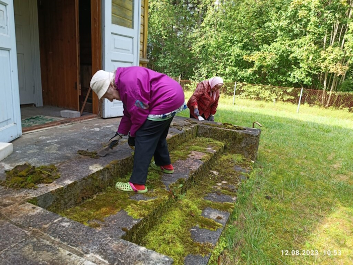
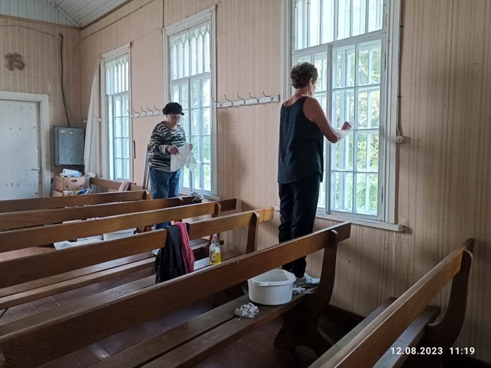
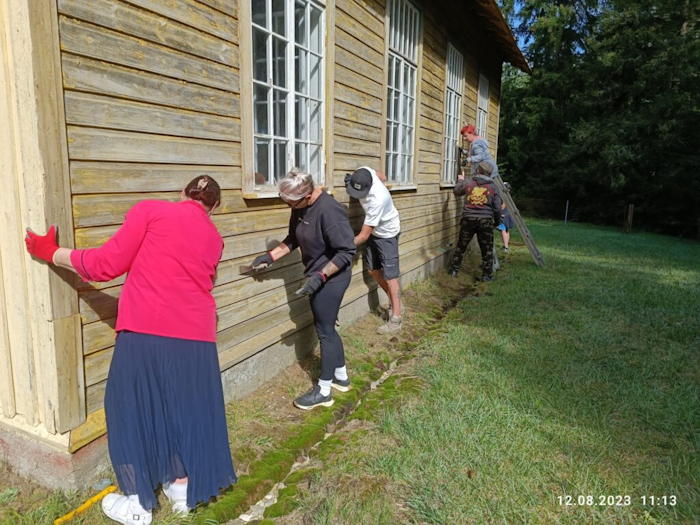
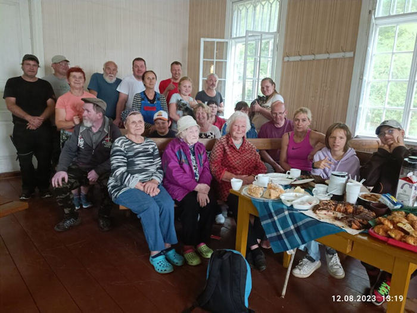
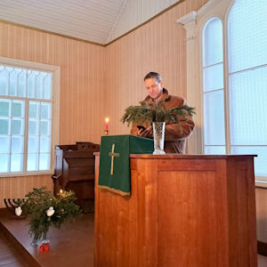
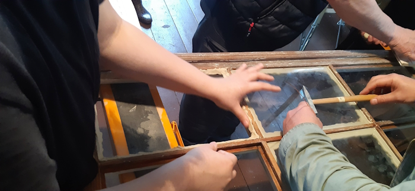
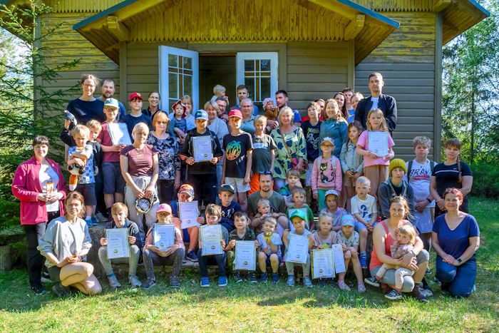
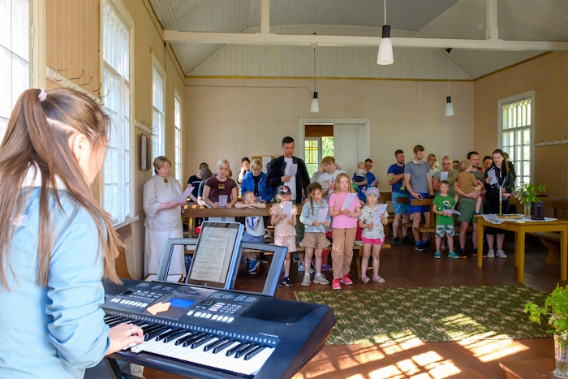
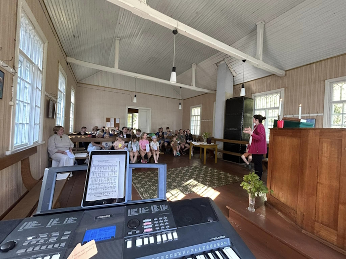
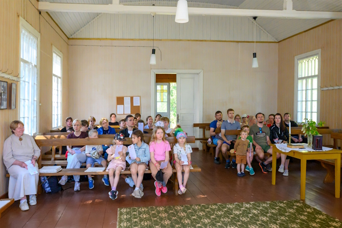

12. ja 23. augustil tuli välja kuulutatud talgupäevale kokku 24 talgulist. Kõige noorem ehk 8 ja vanimad 88 aastased.




Aknad said puhtaks, seintelt osa vana värvi kraabitud, trepilt sammal eemaldatud jm. Sinna juurde paiga lugu ja meenutused - tõeline kogukonnapäev. Mõne päeva pärast sai katus juba paranduse ja värvi.
Palvela 95 a. sünnipäev.

Akende restaureerimise koolitus Tiiu Aaviku juhendamisel - 6 koolituspäeva suve ja sügiskuudel

Palvela tänuüritus- kontsert aprilli lõpus




21.aprill Kevadine koristuspäev
09.juuni Padise naiskoor „Kaseke“
12.juuni Haapsalu pensionäride ekskursiooni külastus
13.juuni Nõmme Vabaaja keskuse maalilaagrist osavõtjate külastus
08.juuli Palveõhtu. Lihula Nelipühikoguduse pastor Markko Põld
26.juuli Marko Raat-i filmiõhtu
30.nov. Laste advendiüritus. Matk metsas, jõulukuuskede ehtimine, valgustamine
10.dets.Nõmme Vabaaja Keskuse pensionäride külastus